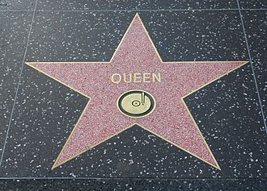

Músicas mais famosas


Conquistas
| Conquista | Quando |
|---|---|
| Vendas de 200 milhões de discos | Durante a carreira |
| 18 álbuns e 18 singles como “número um” | Durante a carreira |
| Dez de suas coleções de DVD também foram para o topo das paradas. | Durante a carreira |
| Recebeu a destacada contribuição da British Phonographic Industry para o British Music Award. | 1990 |
| As músicas “We Will Rock You”, “We Are the Champions”, foram consagradas no Grammy Hall of Fame. | 2009 |
Rock and Roll Hall of Fame
Em 2001, a banda foi incluída no Rock and Roll Hall of Fame, mas apenas Roger e Brian apareceram. Nesta mesma época, a dupla gravou "We Are the Champions" com Robbie Williams para o musical We Will Rock You. A participação se tornou célebre pelos comentários negativos de John Deacon ao jornal The Sun, afirmando que estava satisfeito por não ser envolver na gravação, e que Freddie era insubstituível
Queen fez história com suas performances
Toda banda lendária tem um momento inesquecível. Um momento que os impulsiona para a atmosfera superior da música rock. Para o Queen, essa performance aconteceu em 1985 no Live Aid. Eles só tocaram por 20 minutos, mas esses 20 minutos transformaram a banda em uma lenda. Durante uma seção de a cappella, Mercury segurou uma nota por tanto tempo e tão bem que o momento se tornou “A nota ouvida ao redor do mundo”. Em 2005, uma pesquisa da indústria musical apresentou a performance do Queen no Live Aid como a melhor de todos os tempos.